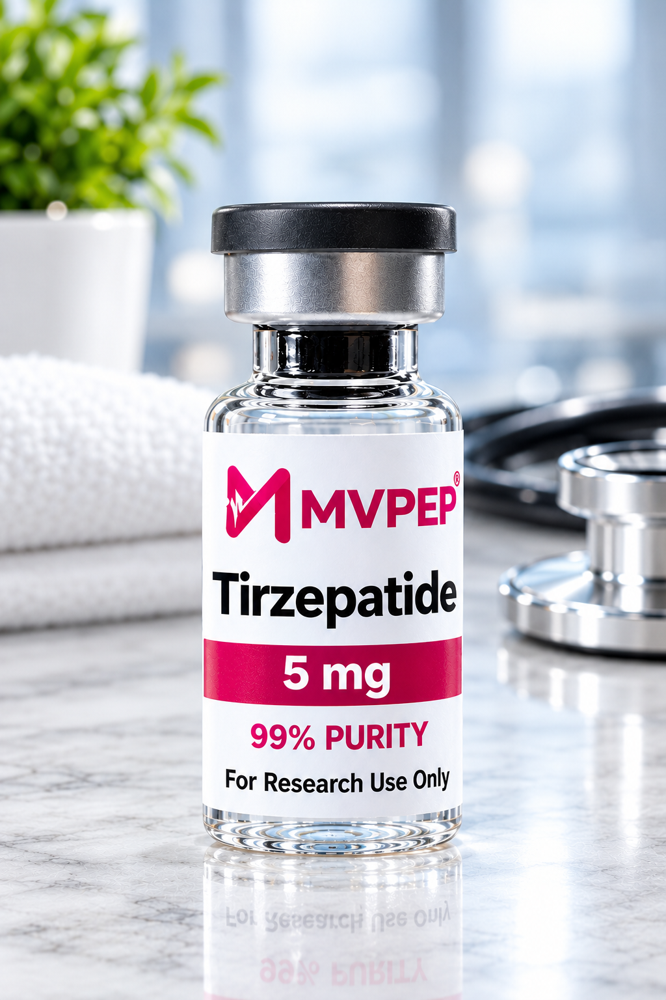
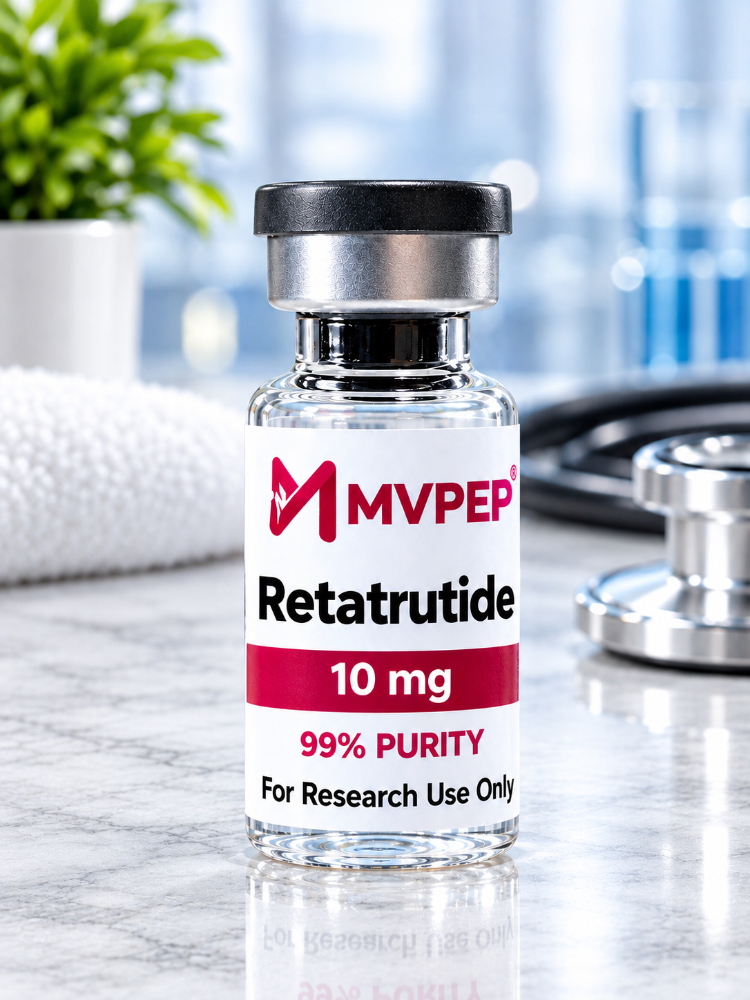

Compounded Tirzepatide in Nigeria: Price, Safety and Where to Buy
Compounded tirzepatide has become one of the most popular weight-loss options in Nigeria because it costs less than Mounjaro pens. But a vial is only as good as its source and its dosing. Here's what to know, and how MedVanceNg makes it safe and simple.
The short answer: compounded tirzepatide is only as safe as its source. MedVanceNg's compounded tirzepatide is ethically sourced and comes with a certificate of analysis (COA), prescribed by our team of doctors and delivered cold. It's the only compounded tirzepatide we'd trust you to inject.
See compounded tirzepatide pricesKey points
- Compounded tirzepatide has the same active ingredient as Mounjaro but isn't made by Eli Lilly.
- It usually costs less, comes in vials, and you measure each dose with a syringe.
- Quality depends on the maker, so sourcing and storage matter.
- MedVanceNg's compounded tirzepatide is ethically sourced, comes with a COA, and is prescribed by our team of doctors.
What is compounded tirzepatide?
Tirzepatide is the medicine inside Mounjaro and Zepbound. Compounded tirzepatide is the same active ingredient prepared by a compounding pharmacy or lab instead of Eli Lilly. It usually comes as a liquid in a multi-dose vial, sometimes combined with additives such as vitamin B12.

MVPEP 5MG

RETATRUTIDE 10MG
Like Mounjaro, it mimics two gut hormones, GIP and GLP-1. That reduces appetite, helps you feel full sooner and improves blood sugar control.
Compounded tirzepatide vs Mounjaro
- Maker. Mounjaro is made by Eli Lilly. Compounded versions are made by individual pharmacies or labs.
- Format. Mounjaro comes in pre-filled single-dose pens. Compounded tirzepatide comes in vials you draw from with a syringe.
- Price. Compounded tirzepatide usually costs less.
- Testing. Mounjaro was tested in large clinical trials. Compounded versions aren't reviewed by regulators like the US FDA, so each batch is only as good as its maker.
- Dosing. Pens give a fixed dose. With vials, your dose is converted from milligrams to syringe units.
Not sure which suits you? MedVanceNg offers both, and our doctors help you choose. See our guide on where to buy Mounjaro and tirzepatide in Nigeria.
Why the source of compounded tirzepatide matters
Recent laboratory testing and regulator warnings abroad have found compounded and online-bought GLP-1 products with the wrong strength, impurities, or too little active ingredient, along with patients overdosing because of confusing vial labels. In Nigeria, much of what is sold as compounded tirzepatide arrives with no information about who made it or whether it was ever tested.
A vial can look perfect and still be wrong. The only way to know what's inside is independent testing, which is what a certificate of analysis shows.
The real harm from unknown sources
People who bought compounded tirzepatide from unknown sources or random social media vendors have reported harmful effects. Regulators abroad have received reports of patients needing hospital care after using compounded GLP-1 medicines, often because a vial was stronger than labelled or the dose instructions were unclear. Problems reported include:
- Severe nausea and vomiting leading to dehydration, often from accidental overdose.
- Dangerously low blood sugar, especially when products contain the wrong ingredient.
- Infections and skin reactions at the injection site from non-sterile vials.
- No weight loss at all, because the vial contained little or no tirzepatide.
None of these sellers are accountable when something goes wrong, and none have a doctor to call. That's the gap MedVanceNg was built to close.
Why MedVanceNg is the source to trust
- Certificate of analysis (COA)Our compounded tirzepatide comes with a COA confirming its strength and purity. Ask us to see it.
- Ethically sourcedWe know exactly where our tirzepatide is made and how it reaches you.
- Prescribed by our doctorsOur team of licensed doctors assesses you and sets your dose before anything is sent.
- Exact dosing in unitsYour doctor tells you precisely how many units to draw for your vial.
- Cold from start to finishStored and delivered at 2–8°C in insulated packaging.
- Follow-up at every doseWe guide each increase and help with side effects on WhatsApp.
Unlike unknown vendors, our compounded tirzepatide comes with a COA, a known source and a team of doctors reviewing your treatment. That's why MedVanceNg is the only compounded tirzepatide source we recommend.
How much is compounded tirzepatide in Nigeria?
Prices depend on the vial's strength, how many doses it holds and the exchange rate. It usually costs less than a month of Mounjaro pens. Be wary of prices far below the market, which often mean poor-quality or badly stored vials. At MedVanceNg you can see our compounded tirzepatide prices upfront in our GLP-1 shop, with no hidden costs.
See compounded tirzepatide prices in our GLP-1 shop
Prefer to talk first? Ask our team on WhatsApp.
Getting the dose right
Dosing errors are the biggest avoidable risk with compounded vials. Doses are prescribed in milligrams, such as 2.5 mg, but drawn up in units on an insulin syringe, and the number of units depends on your vial's strength. At MedVanceNg, one of our doctors gives you the exact units for your specific vial, and rechecks them whenever your dose or vial changes.
How to order compounded tirzepatide from MedVanceNg
- Message us on WhatsApp. Tell us your goals and we'll book your consultation.
- Speak with one of our doctors. We review your health history and confirm whether compounded tirzepatide is right for you.
- Get your plan and price. Your doctor sets your starting dose and you get the full cost upfront.
- Receive it cold. We deliver in insulated cold-chain packaging.
- Stay supported. We check in as your dose increases and whenever you have questions.
Who should consider tirzepatide?
Doctors usually consider tirzepatide for adults with a BMI of 30 or above, or 27 or above with a weight-related condition like type 2 diabetes or high blood pressure. It isn't suitable during pregnancy or breastfeeding, or for anyone with a personal or family history of medullary thyroid cancer or MEN2. People with a history of pancreatitis or gallbladder disease need careful assessment. Our doctors check all of this during your consultation.
Start compounded tirzepatide with MedVanceNg
Talk to our team of licensed doctors today. We'll assess you, give you clear dosing in units and deliver your treatment cold across Nigeria.
Shop compounded tirzepatideFrequently asked questions
What is compounded tirzepatide?
It's the same active ingredient as Mounjaro, prepared in vials by a compounding pharmacy or lab rather than made by Eli Lilly. It usually costs less, but quality depends on who made it.
Is compounded tirzepatide as effective as Mounjaro?
If it contains the correct amount of pure tirzepatide, it works the same way. Because compounded versions aren't tested like Eli Lilly's product, sourcing and lab testing matter, which is why MedVanceNg's compounded tirzepatide comes with a certificate of analysis (COA).
How much is compounded tirzepatide in Nigeria?
It usually costs less than Mounjaro pens, but prices vary with strength and vial size. You can see current prices in the MedVanceNg GLP-1 shop.
Where can I buy compounded tirzepatide in Nigeria?
MedVanceNg offers compounded tirzepatide that is ethically sourced and comes with a certificate of analysis (COA). It is prescribed by our team of licensed doctors, delivered cold anywhere in Nigeria, and comes with exact dosing instructions in units for your vial.
How do I measure a compounded tirzepatide dose?
Doses are prescribed in milligrams but drawn up in units on an insulin syringe, and the conversion depends on the vial's strength. Our team of MedVanceNg doctors gives you the exact number of units for your vial, because mistakes here can cause overdoses.
This article is for general information and is not a substitute for advice from your own doctor.